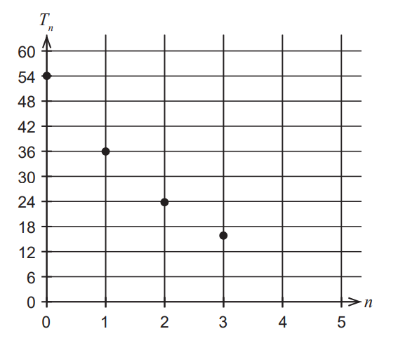

For ATAR Students
The calculator free questions are indicated accordingly. Those questions are solved in a way that does not require a calculator.
For ACT Students
The ACT is a timed exam...$60$ questions for $60$ minutes
This implies that you have to solve each question in one minute.
Some questions will typically take less than a minute a solve.
Some questions will typically take more than a minute to solve.
The goal is to maximize your time. You use the time saved on those questions you
solved in less than a minute, to solve the questions that will take more than a minute.
So, you should try to solve each question correctly and timely.
So, it is not just solving a question correctly, but solving it correctly on time.
Please ensure you attempt all ACT questions.
There is no negative penalty for a wrong answer.
For JAMB and CMAT Students
Calculators are not allowed. So, the questions are solved in a way that does not require a calculator.
For WASSCE Students
Any question labeled WASCCE is a question for the WASCCE General Mathematics
Any question labeled WASSCE:FM is a question for the WASSCE Further Mathematics/Elective Mathematics
For GCSE Students
All work is shown to satisfy (and actually exceed) the minimum for awarding method marks.
Calculators are allowed for some questions. Calculators are not allowed for some questions.
For NSC Students For the Questions:
Any space included in a number indicates a comma used to separate digits...separating multiples of three digits from
behind.
Any comma included in a number indicates a decimal point. For the Solutions:
Decimals are used appropriately rather than commas
Commas are used to separate digits appropriately.
Solve all questions
Use at least two methods whenever applicable.
Show all work
(1.) ATAR Deborah is purchasing mealworms for her pet lizard, Lizzy, to eat.
Deborah starts by buying 50 mealworms.
She then buys an additional 15 at the start of each subsequent week.
She feeds 12 mealworms to Lizzy each week, and each week a certain percentage of the mealworms dies.
Deborah has found that the approximate number of mealworms at the start of the $n^{th}$ week can be modelled by $M_n$ where
$M_{n + 1} = 0.9(M_n - 12) + 15, \;\;\;\; M_1 = 50$
(a.) What percentage of the mealworms dies each week?
(b.) Determine the approximate number of mealworms Deborah has at the start of the fifth week.
(c.) Deborah claims that she will never run out of the mealworms using this model. Justify her claim.
After 10 weeks, hot weather results in a larger percentage of the mealworms dying, so Deborah alters the model to:
$N_{n + 1} = 0.8(N_n - 12) + 15, \;\;\;\; N_1 = c$
(d.)
(i) Determine the value of $c$
(ii) Determine the approximate number of mealworms Deborah has at the start of the thirtieth week.
Deborah's vet recommends feeding Lizzy 10 mealworms a week.
She would also like to maintain a constant number of 30 mealworms at the start of each week, so she changes the above model to:
$P_{n + 1} = 0.8(P_n - 10) + k$
(e.) Determine the value of $k$, the number of mealworms she must buy each week, to ensure this occurs.
$
M_{n + 1} = 0.9(M_n - 12) + 15 \\[3ex]
M_{n + 1} = 0.9M_n - 10.8 + 15 \\[3ex]
M_{n + 1} = 0.9M_n + 4.2 \\[3ex]
$
Recall the Slope-Intercept form of a straight line
In this case, the slope is $0.9$ or $0.9(100) = 90\%$
This slope represents the percentage of the mealworms that live each week based on the fact that the equation repreents the
approximate number of mealworms at the start of each week.
(a.)
This implies that the percentage of mealworms that dies each week is $100 - 90 = 10\%$
(2.) ATAR Calculator-free A researcher compared the performance of varuious golf balls.
The graph below shows the height reached above the ground by a particular golf ball after each of the first three bounces.
It was initially dropped from a height of 54 cm.

(a.) Write the recursive rule for this sequence.
(b.) Write the rule for the $n^{th}$ term of this sequence.
(c.) Show that the height reached by the golf ball above the ground after the fifth bounce is $\dfrac{64}{9}$ cm
$
RS_{n + 1} = r * RS_{n} + a \\[3ex]
From\;\;the\;\;Graph \\[3ex]
RS_{1} = 54 \\[3ex]
RS_{2} = 36 \\[3ex]
RS_{3} = 24 \\[3ex]
RS_{2} = r * RS_{1} + a \\[3ex]
36 = r * 54 + a \\[3ex]
54r + a = 36...eqn.(1) \\[3ex]
RS_{3} = r * RS_{2} + a \\[3ex]
24 = r * 36 + a \\[3ex]
36r + a = 24...eqn.(2) \\[3ex]
eqn.(1) - eqn.(2) \implies \\[3ex]
18r = 12 \\[3ex]
r = \dfrac{12}{18} \\[5ex]
r = \dfrac{2}{3} \\[5ex]
From\;\;eqn.(2) \\[3ex]
a = 24 - 36r \\[3ex]
a = 24 - 36\left(\dfrac{2}{3}\right) \\[5ex]
a = 24 - 12(2) \\[3ex]
a = 24 - 24 \\[3ex]
a = 0 \\[3ex]
(a.) \\[3ex]
RS_{n + 1} = \dfrac{2}{3} * RS_{n} + 0 \\[5ex]
RS_{n + 1} = \dfrac{2}{3} * RS_{n} \\[5ex]
(b.) \\[3ex]
Based\;\;on\;\;the\;\;sequence: \\[3ex]
The\;\;sequence\;\;is\;\;also\;\;a\;\;Geometric\;\;Sequence \\[3ex]
a = 54 \\[3ex]
r = \dfrac{2}{3} \\[5ex]
GS_n = ar^{n - 1} \\[5ex]
GS_n = 54 * \left(\dfrac{2}{3}\right)^{n - 1} \\[5ex]
(c.) \\[3ex]
Fifth\;\;bounce \implies n = 5 \\[3ex]
GS_5 = 54 * \left(\dfrac{2}{3}\right)^{5 - 1} \\[5ex]
GS_5 = 54 * \left(\dfrac{2}{3}\right)^{4} \\[5ex]
GS_5 = 54 * \dfrac{2}{3} * \dfrac{2}{3} * \dfrac{2}{3} * \dfrac{2}{3} \\[5ex]
GS_5 = \dfrac{64}{3}
$
(3.)
(4.) Assume Lake Winnipesaukee, State of New Hampshire initially contained $1200$ fish.
Suppose that in the absence of predators or other causes of removal, the fish population increases by $12\%$ each month.
However, factoring in all causes; $90$ fish are lost each month.
(a.) Write a recurrence relation for the population of fish after $n$ months.
(b.) How many fish are there after $6$ months?
If your fish model predicts a non-integer number of fish, round down to the next lower integer.
The ACT is a timed test - a question should typically take a minute to solve
We shall do it two ways
The first method is much faster. It is recommended for the ACT
$
\underline{First\:\: Method - Faster}
d = 3rd\:\:term - 2nd\:\: term \\[3ex]
d = 6 - 12 = -6 \\[3ex]
Also,\:\: d = 2nd\:\: term - 1st\:\: term \\[3ex]
-6 = 12 - a \\[3ex]
a = 12 + 6 \\[3ex]
a = 18 \\[3ex]
\underline{Second\:\: Method - Longer} \\[3ex]
AS_n = a + d(n - 1) \\[3ex]
AS_2 = a + d = 12 ...eqn.(1) \\[3ex]
AS_3 = a + 2d = 6 ...eqn.(2) \\[3ex]
2 * eqn.(1) \implies 2(a + d) = 2(12) \\[3ex]
2 * eqn.(1) \implies 2a + 2d = 24...eqn.(3) \\[3ex]
eqn.(3) - eqn.(2) \implies (2a + 2d) - (a + 2d) = 24 - 6 \\[3ex]
2a + 2d - a - 2d = 18 \\[3ex]
a = 18 \\[3ex]
$
The first term is $18$
(7.)
$
AS_n = a + d(n - 1) \\[3ex]
AS_2 = a + d = x - 1...eqn.(1) \\[3ex]
AS_4 = a + 3d = x + 1...eqn.(2) \\[3ex]
AS_6 = a + 5d = 7...eqn.(3) \\[3ex]
eqn.(2) - eqn.(1) \implies (a + 3d) - (a + d) = (x + 1) - (x - 1) \\[3ex]
a + 3d - a - d = x + 1 - x + 1 \\[3ex]
2d = 2 \\[3ex]
d = \dfrac{2}{2} \\[5ex]
(i)\:\: d = 1 \\[3ex]
From\:\: eqn.(3) \\[3ex]
a + 5d = 7 \\[3ex]
a = 7 - 5d \\[3ex]
Subst.\:\: d = 1 \\[3ex]
a = 7 - 5(1) \\[3ex]
a = 7 - 5 \\[3ex]
(ii)\:\: a = 2 \\[3ex]
From\:\: eqn.(1) \\[3ex]
a + d = x - 1 \\[3ex]
x - 1 = a + d \\[3ex]
x = a + d + 1 \\[3ex]
Subst.\:\: a = 2 \:\:and\:\: d = 1 \\[3ex]
x = 2 + 1 + 1 \\[3ex]
(iii)\:\: x = 4
$
(8.)
$
AS_2 = a + d = -11 ...eqn.(1) \\[3ex]
AS_3 = a + 2d = -38 ...eqn.(2) \\[3ex]
From\:\: eqn.(1);\:\: d = -11 - a \\[3ex]
Substitute\:\: (-11 - a)\:\:for\:\:d\:\:in\:\:eqn.(2) \\[3ex]
a + 2(-11 - a) = -38 \\[3ex]
a - 22 - 2a = -38 \\[3ex]
-a = -38 + 22 \\[3ex]
-a = -16 \\[3ex]
a = \dfrac{-16}{-1} \\[5ex]
a = 16
$
(9.)
$
AS_2 = a + d = 40 - 5n ...eqn.(1) \\[3ex]
AS_4 = a + 3d = 20m + n ...eqn.(2) \\[3ex]
eqn.(2) - eqn.(1) \:\:gives \\[3ex]
(a + 3d) - (a + d) = (20m + n) - (40 - 5n) \\[3ex]
\rightarrow a + 3d - a - d = 20m + n - 40 + 5n \\[3ex]
2d = 20m + 6n - 40 \\[3ex]
2d = 2(10m + 3n - 20) \\[3ex]
d = \dfrac{2(10m + 3n - 20)}{2} \\[5ex]
d = 10m + 3n - 20 \\[3ex]
eqn.(2) - 3 * eqn.(1) \:\:gives \\[3ex]
(a + 3d) - [3(a + d)] = (20m + n) - [3(40 - 5n)] \\[3ex]
\rightarrow a + 3d - (3a + 3d) = 20m + n - (120 - 15n) \\[3ex]
a + 3d - 3a - 3d = 20m + n - 120 + 15n \\[3ex]
-2a = 20m + 16n - 120 \\[3ex]
-2a = 2(10m + 8n - 60) \\[3ex]
a = \dfrac{2(10m + 8n - 60)}{-2} \\[3ex]
a = -(10m + 8n - 60) \\[3ex]
a = -10m - 8n + 60
$
 Formulas: Formulas
Formulas: Formulas